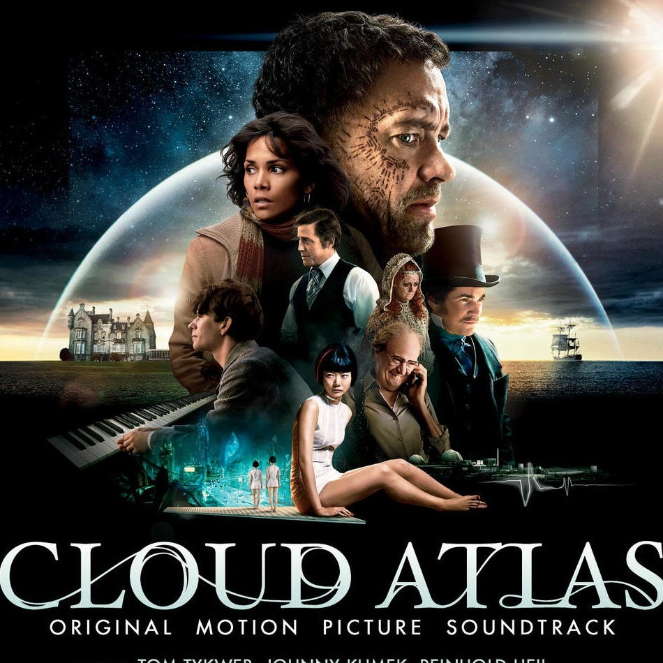
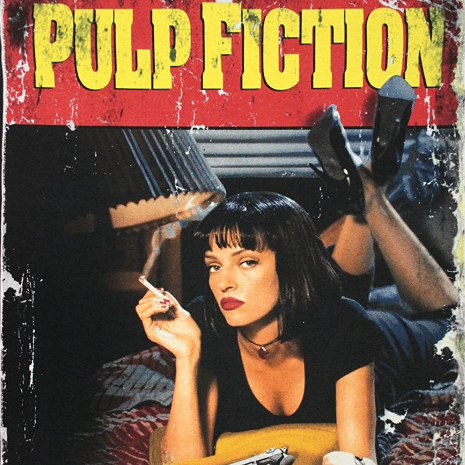
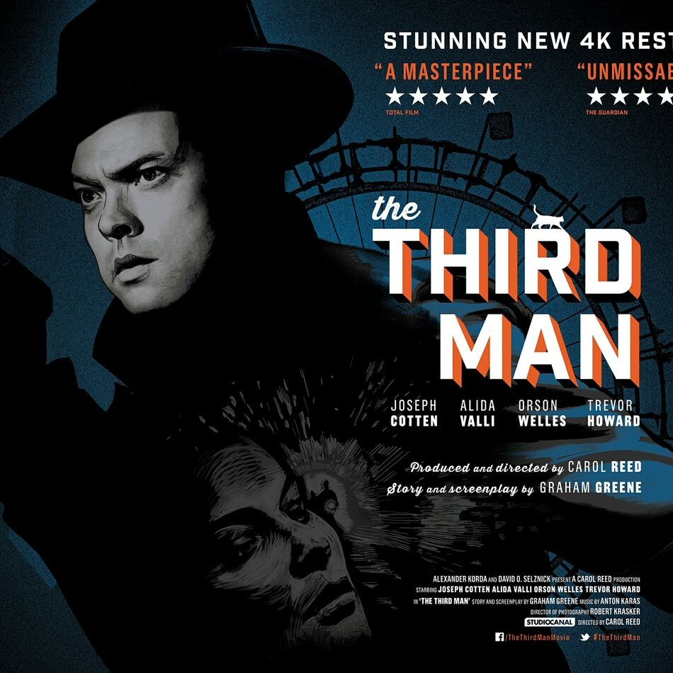

I want a big house, tons of money, and self respect.
|  |
Cloud AtlasAn exploration of how the actions of individual lives impact one another in the past, present and future, as one soul is shaped from a killer into a hero, and an act of kindness ripples across centuries to inspire a revolution. |
|  |
Pulp FictionA highly stylized Tarantino film, Pulp fiction tells stories of criminal Los Angeles; philosophical conversations of two gangsters; saving a girl from a drug overdose and a boxer who was deceived. |
|  |
The Third ManThe Third Man tells a paranoid story of social, economic, and moral corruption in a depressed, rotting and crumbling Vienna following World War II. The striking film-noirish, shadowy thriller was filmed expressionistically within the decadent, shattered and poisoned city that has been sector-divided along geo-political lines. |
This page was made during the Full Stack Programming course @Le Wagon
Social Media Links